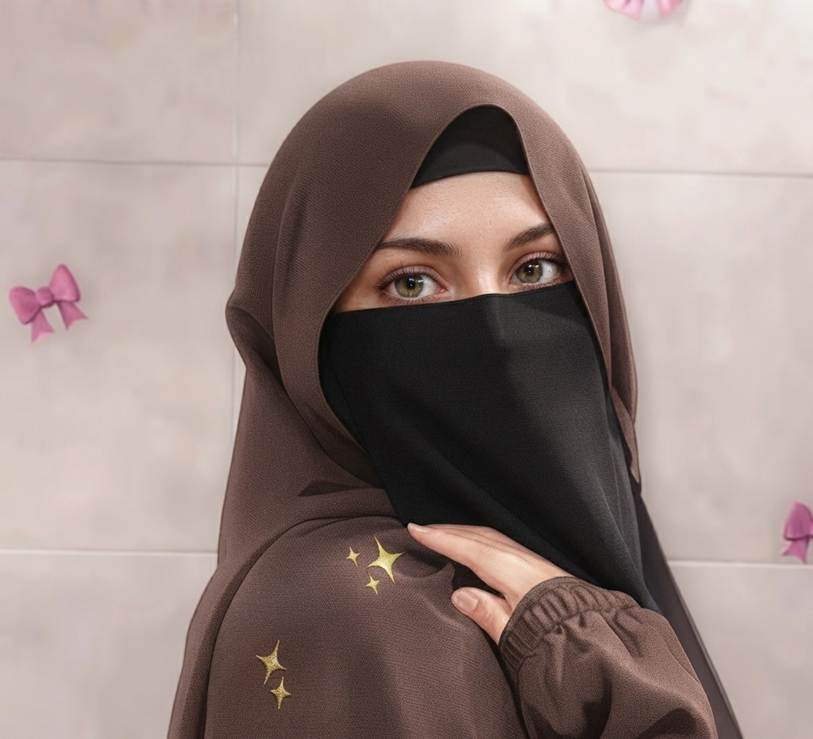

About Me ♡
Hi! I’m Paras Qureshi, a passionate frontend developer who enjoys turning ideas into beautiful, functional, and user-friendly websites. With years of learning and hands-on practice in web development, I love working with HTML, CSS, and JavaScript to create clean, responsive websites that provide a smooth and engaging user experience.
My Journey ♡
Started Coding
Driven by curiosity, I began exploring web development and discovered a passion for creating websites.
Built Projects
Created a variety of websites for cafes, beauty brands, footwear, and more, focusing on clean and engaging designs.
Gained Experience
Worked on a variety of web development projects and gained valuable experience through internships.
Now
Building my own portfolio to showcase my skills, projects, and journey as a web developer.